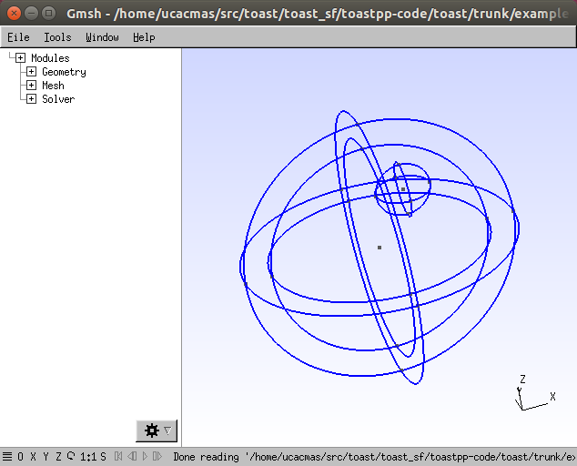
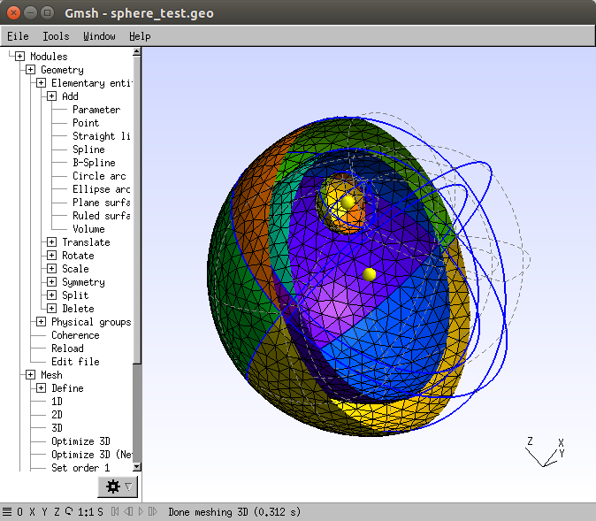

| Image Reconstruction in Diffuse Optical Tomography |
Continued from: Mesh generation tutorial 1: Create a spherical meshExtending the sphere mesh with internal structureTo add structure to the mesh geometry, we now want to add internal surfaces that define region boundaries. These can be useful for example to assign different optical properties for the forward solver. In general, internal surfaces are defined in the same way as the domain surface definition described in Tutorial 1. You can add as many surfaces as you like, but the interactive input quickly becomes tedious and error-prone. A faster way is by manually editing the geometry file. Make a copy of the .geo file created in Tutorial 1:
cp sphere_test.geo segmented_sphere_test.geo
If you didn't work through Tutorial 1, you can make a copy of $TOASTDIR/examples/matlab/gmsh/sphere.geo instead. Open the copy in a text editor. You should see the definitions of the points, circle arcs, surfaces and volumes that we have entered interactively in the Gmsh window. Add a concentric layerFirst, we want to create a concentric layer below the sphere surface. This may for example represent the inner surface of a superficial skin layer. The easiest way to do this is by creating a scaled copy of the outer mesh surface. The Gmsh geometry script commands required for this are Duplicata (for duplicating an element), and Dilate (for scaling an element). Locate the definitions for the Surface loop in the geometry file. This should look something like this:
Surface Loop(30) = {14, 16, 18, 20, 22, 24, 26, 28};
The surface loop defines the sphere surface via the 8 sphere patches that make up the surface. The list of surface patch identifiers is given in curly brackets. The values of identifiers are automatically assigned and may be different in your file. We now want to create a scaled copy of these patches. Add the following to the file:
Dilate {{0,0,0}, 0.8} {
Duplicata { Surface{14, 16, 18, 20, 22, 24, 26, 28}; } } replacing the identifiers with your own values. The Dilate command has two parameters, the reference point of the scaling transform (in this case, the origin, coinciding with the sphere centre), and the scaling factor, 0.8. You should also delete the Volume definition in the geo file, because the volumes will have to be re-defined. Save the modified .geo file, and load it into gmsh.
The layered mesh geometry. Adding an off-centre blobLet's add another, off-centre internal target sphere to the geometry, representing e.g. a tumour. In the .geo file, make another replica of the sphere surface, with a smaller scale and shifted centre:
Dilate {{3,0,5}, 0.2} {
Duplicata { Surface{14, 16, 18, 20, 22, 24, 26, 28}; } }  Adding an off-centre internal sphere surface Defining the sub-volumesThe domain is now segmented into three regions by three surfaces. Two of the regions are bounded by two surfaces each, and one (the small inner sphere) by a single surface. We now need to define the surfaces that bound the three sub-volumes:
Creating the segmented meshWe can now create a mesh from this geometry that conforms with the internal structure we defined. Modules | Mesh | 3D After setting the display parameters as in Tutorial 1, and activating a clipping plane, the internal surfaces of the segmented mesh can be viewed in gmsh.  Surfaces of the segmented sphere mesh Write out the mesh into a file: File | Save mesh Adding layer information to the mesh in ToastAs before, you can load the gmsh mesh file into Toast. From Matlab, type
mesh=toastMesh('segmented_sphere_test.msh','gmsh');
mesh.Display The internal structure is not obvious from the surface display of the mesh, but each element contains information about the sub-volume it belongs to via its region index.
reg = mesh.Region;
unique(reg) should display three labels corresponding to the Volume labels in the .geo file. You can visualise the regions in a cross section:
grd = [128 128 128];
basis = toastBasis(mesh,grd); elref = basis.GridElref; regim = zeros(size(elref)); for i=1:length(elref) el = elref(i); if el>0 regim(i) = reg(el); end end regim = reshape(regim,grd); imagesc(squeeze(regim(:,64,:)),[min(reg)-1,max(reg)]); axis equal tight; colorbar
Cross section through segmented sphere loaded into a Toast mesh The region labels can for example be used to define piecewise constant parameters for an FEM forward solution. |